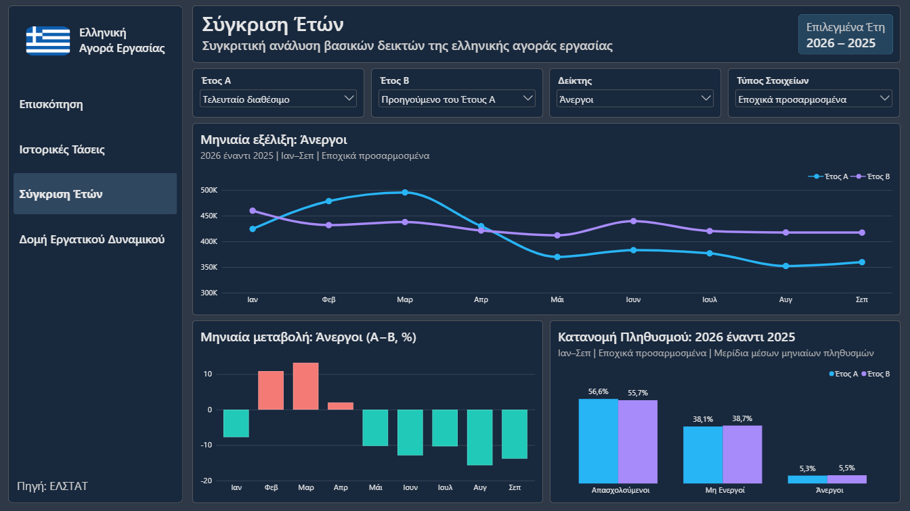
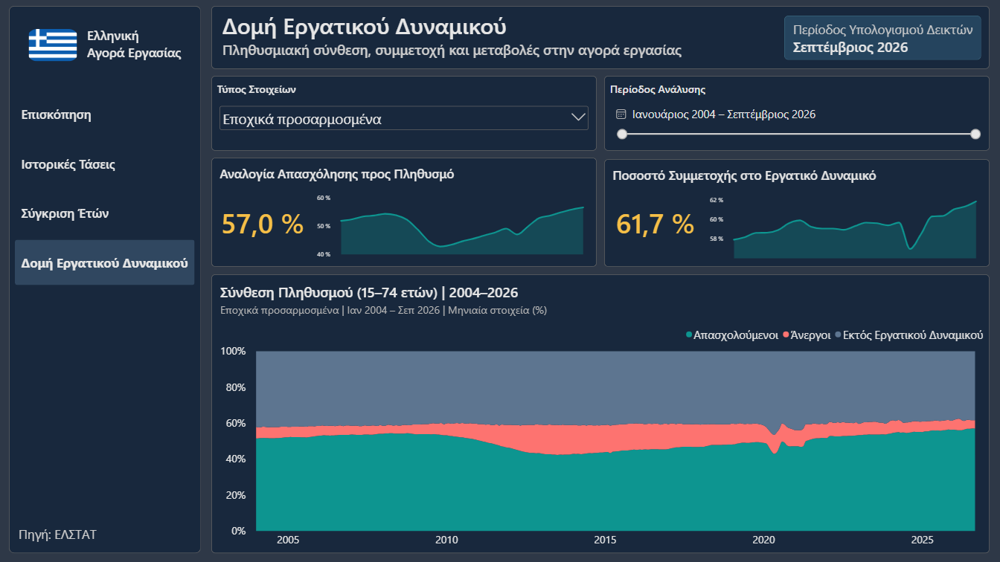
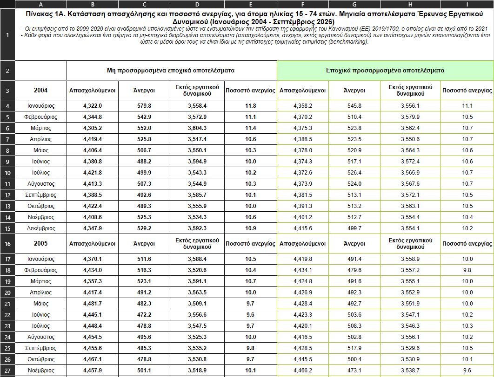
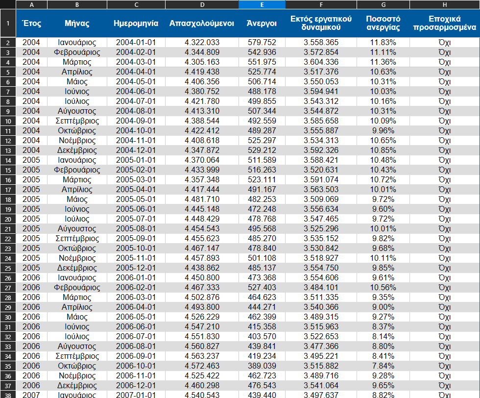

Public data · Dashboard development
Greece labour
market analysis
A four page Power BI report that follows employment, unemployment and labour force participation through more than two decades of monthly ELSTAT data.

01 / The question
What changed, when, and for whom?
A single unemployment rate cannot show the whole labour market. This report brings employment, unemployment and the population outside the labour force into one historical view, with options to compare years and seasonal adjustment.
02 / The dataset
Monthly ELSTAT labour force statistics.
The source series covers January 2004 to September 2026. The cleaned dataset contains 273 months with seasonally adjusted and unadjusted records, for 546 month and series observations. Population measures refer to people aged 15 to 74.
Open the ELSTAT labour force statistics03 / The workflow
Clean the series, then compare carefully.
- 01Restructure the source
Excel turns year blocks and separate adjusted series into a consistent monthly table.
- 02Standardize and validate
Monthly dates, population units and adjustment labels are checked before reporting.
- 03Build measures in DAX
Measures support period selection, year comparisons, participation and population composition.
- 04Present four views
Overview, historical trends, year comparison and workforce structure each answer a different question.
04 / The visuals
Four views of a changing workforce.





05 / Findings & recommendations
The unemployment rate tells only part of the story.
During the pandemic, the annual average unemployment rate dipped slightly from 17.9% in 2019 to 17.6% in 2020 even as employment fell by about 183,000 and the population outside the labour force grew by about 200,000. Looking at all three groups reveals changes the headline rate alone can miss.
Recommended interpretation
Review employment and inactivity alongside the unemployment rate. For year comparisons, use the same available months when a year is incomplete, and keep seasonally adjusted and unadjusted observations separate.